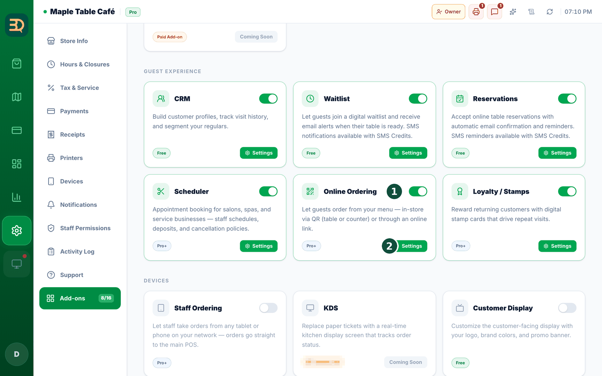
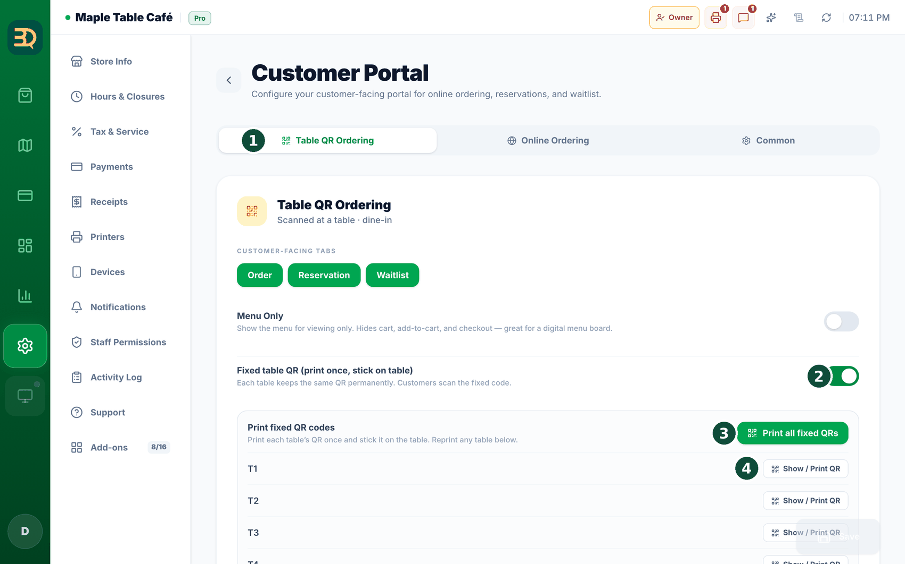
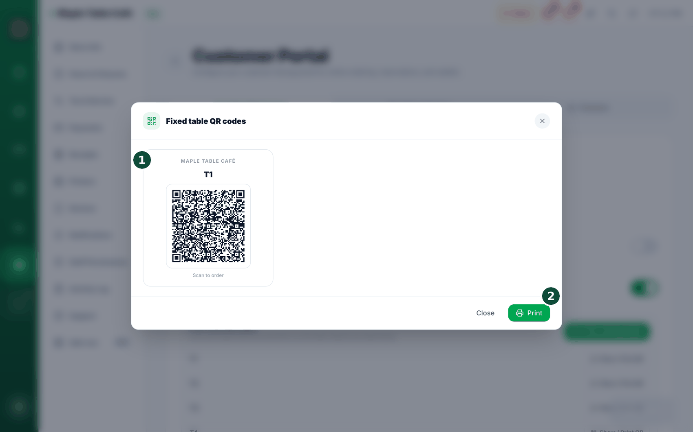
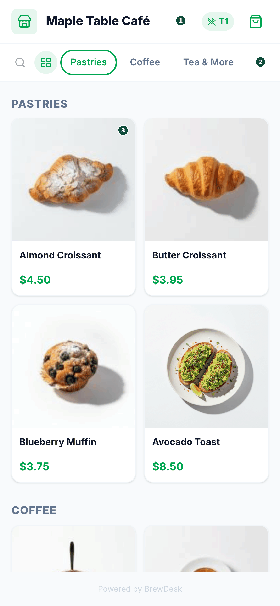

18QR code ordering
A QR code is that little square pattern people scan with their phone camera. With it, customers can order and pay from their own phone. They don't have to download anything. QR ordering is order-only — guests browse the menu, add to a cart, and pay.
Where to turn it on
Turn it on in Settings › Add-ons › Online Ordering (this is QR ordering, a Pro add-on). Flip the switch on.




- Go to the Add-on store in Settings and turn on QR ordering. (This needs the Pro or Business plan.)
- BrewDesk makes a QR code for each table. Tap to print them.
- Put one QR code on each table.
- A customer points their phone camera at the code. Your menu opens on their phone — no app to download.
- They browse the menu, add what they want to a cart, and pay. The order then pops up on your till by itself.
No app needed. The customer just uses their normal phone camera. There is nothing for them to install.
One thing to know: the QR ordering page is for ordering and paying only. Booking a table (reservations) and joining the line (waitlist) are not part of the QR page — your staff handle those in the POS (see Reservations & Scheduler). This keeps things simple for the guest.
Running it day to day
QR orders need your main till on. QR (and online) orders come in through your main till. If your main till is off or offline, new QR orders pause for a moment and the guest sees a short "please try again in a moment" note — the order goes through as soon as your main till is back.
Making a table's QR after hours? If you print a table's QR code by hand outside your opening times, BrewDesk asks you to confirm first, so a code never goes out by mistake. Automatic and bulk seating aren't affected.
Don't print new table QRs while the internet is down. If your till can't reach BrewDesk and you try to issue a QR, it stops you first: "Check the internet connection — can't issue a table QR." A guest who scanned that code would order into thin air — the order wouldn't arrive at your till. Take orders yourself until the connection is back.
What guests see
What the guest sees: on their phone, a guest can open My Orders to see today's and earlier orders, with an item-by-item bill. After they pay, they need to scan the QR again to start a fresh order — this stops a paid order from being added to by accident.
Gallery or list view. Guests can switch the phone menu between a gallery view (big food photos) and a simple list. Items without a photo show your store logo instead, so the menu always looks tidy. Whichever view a guest picks is remembered on their phone.
Related topics
Need more help?
You can send a support ticket from the app under Settings › Support.